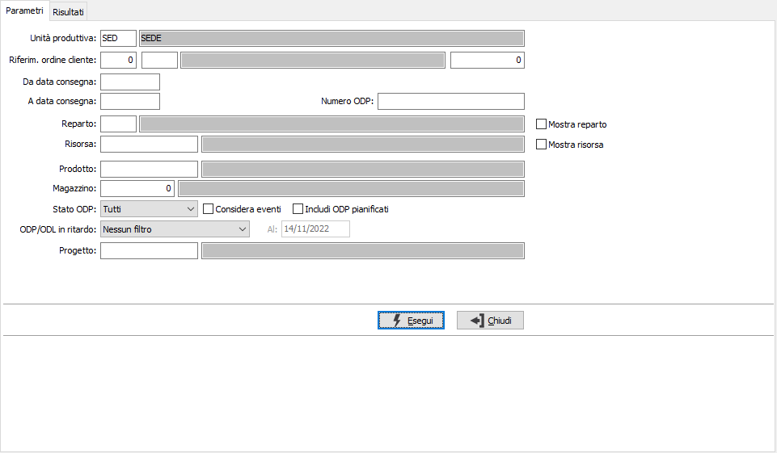
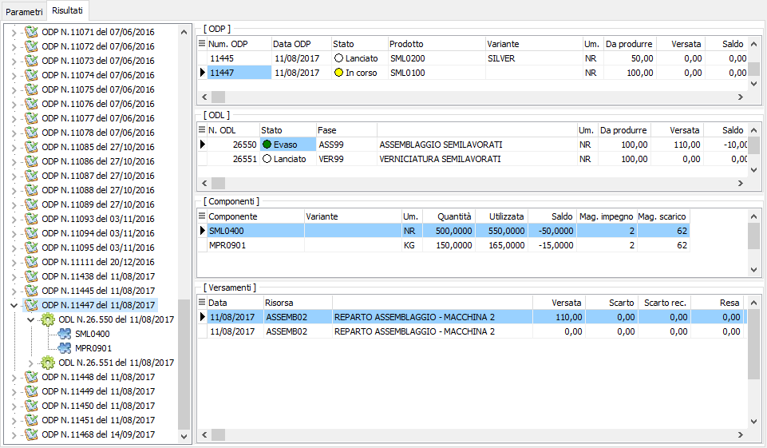
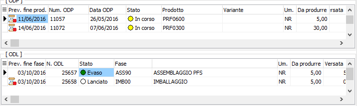
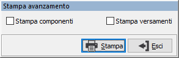

Analisi avanzamento (produzione)
Attraverso questa analisi è possibile per gli operatori del reparto produzione ottenere informazioni sullo stato di avanzamento degli ODP e de singoli ODL.
Nei parametri viene richiesta l'unità produttiva con proposta l'unità produttiva di default valida per l'utente connesso ad OS1; è possibile solo scegliere l'unità produttiva, se gestite in configurazione le unità produttive multiple; sono presenti vari criteri di selezione che consentono di selezionare un singolo ordine, un singolo ODP, un periodo di consegne, un reparto, una risorsa, un prodotto, un magazzino, un progetto se gestito e la possibilità di selezionare lo stato degli ODP tra Tutti, Pianificati, Lanciati, In corso, Evasi e Da evadere che comprende gli stati prima di Evaso; spuntando la casella "Considera eventi" si indica se devono essere considerati gli ODP/ODL in stato "Lanciato" come stato "In corso" se sono presenti eventi associati; spuntando la casella "Includi ODP pianificati", attiva solo se si seleziona lo "Stato ODP" "Tutti" o "Da evadere", saranno considerati anche gli ODP in stato Pianificato. Sono presenti anche due caselle di spunta "Mostra reparto" e "Mostra risorsa" che se spuntate modificano la visualizzazione della struttura del risultato. è possibile specificare l'opzione "ODP/ODL in ritardo" per filtrare gli ODP/ODL in ritardo (cioè ancora aperti e la cui data di prevista fine lavorazione è ormai trascorsa); è possibile impostare il parametro come filtro (solo ODP/ODL in ritardo) oppure come avviso (evidenzia ODP/ODL in ritardo).

La pressione del pulsante Esegui avvia l'elaborazione e porta alla pagina Risultati.

In questa pagina vengono mostrati i dati elaborati in base ai criteri di selezione suddivisi in due sezioni: la sezione a sinistra in formato grafico riporta gli ODP e gli ODL collegati, se spuntate le caselle "Mostra Risorsa" e "Mostra reparto" saranno presenti anche questi elementi ed i dati saranno raggruppati per reparto e/o risorsa. Questa sezione è "navigabile", nel senso che spostandosi tra gli elementi la parte di destra visualizza gli stessi dati in formato esteso. Nella griglia in alto sono presenti i riferimenti agli ODP su cui compaiono le quantità da produrre e versate, inoltre viene riportata anche l'indicazione dello stato accompagnata da un indicatore colorato: grigio per i pianificati, bianco per i lanciati, giallo per quelli in corso e verde per quelli evasi. Per ogni ODP vengono visualizzati nella griglia sottostante i relativi ODL su cui compaiono le quantità da produrre e versate, inoltre viene riportata anche l'indicazione dello stato accompagnata da un indicatore colorato con stesso significato di quello presente sugli ODP, in più le fasi esterne vengono colorate in blu. Per ogni ODL vengono mostrati nelle due griglie sottostanti i componenti ognuno con i relativi utilizzi ed i versamenti con le relative quantità.
Se attiva l'opzione "ODP/ODL in ritardo" sarà presente la colonna Data prevista fine produzione, per gli ODP e fine fase per gli ODL con un indicatore visivo per capire se il rigo risulta nei tempi (clessidra con pallino verde), alla scadenza (clessidra con triangolo giallo) oppure in ritardo (clessidra con pallino rosso).


Utilizzando i bottoni Anteprima o Stampa presenti nella toolbar è possibile effettuare la stampa dei dati elaborati; prima di effettuare la stampa viene mostrata la finestra riportata a lato dove è possibile indicare, spuntando le relative caselle, se includere nella stampa anche i dati dei componenti e/o dei versamenti, oppure stampare solo i dati relativi ad ODP ed ODL.